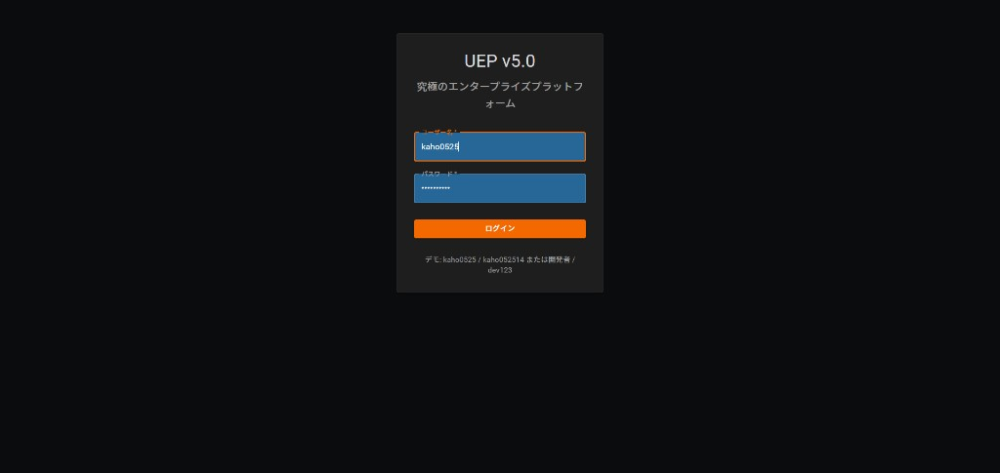
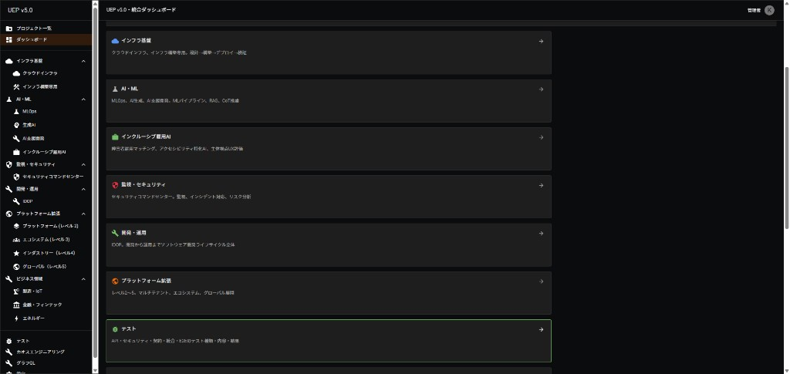
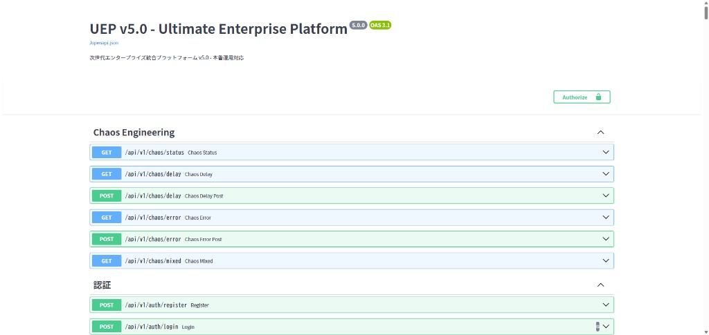
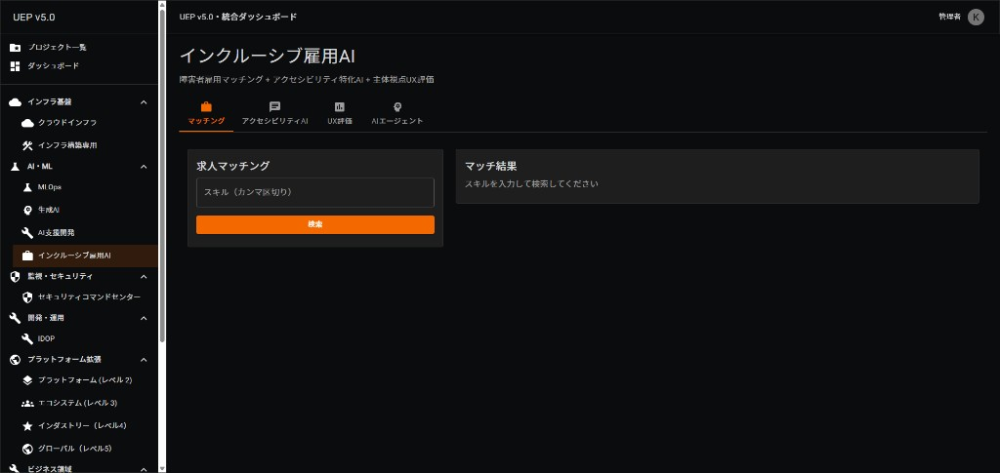

インフラエンジニアとしての実装実績をまとめたものです。UEP v5.0 を中心に、Docker・Kubernetes・Terraform・監視基盤・MLOps 等の実績を記載しています。
インフラを中心に、バックエンド・フロントエンド・AIまで一貫して担当可能です。
| プロジェクト | 概要 | 技術スタック |
|---|---|---|
| UEP v5.0 | 次世代エンタープライズ統合プラットフォーム | Docker, K8s, Terraform, Prometheus, Grafana, Kafka |
| IDOP | 統合開発・運用プラットフォーム | CI/CD, パイプライン, IaC |
| インクルーシブ雇用AI | 障害者雇用マッチング・アクセシビリティAI | LLM, RAG, マッチングエンジン |
実装完了: 2026年1月 成果: 稼働率99.995%、推論レイテンシ10ms未満



Docker, Kubernetes, Terraform, Prometheus, Grafana, Kafka, FastAPI, React, TypeScript

障害者雇用マッチング・アクセシビリティ特化AI・当事者視点UX評価。Webアクセシビリティ検査員検定（レベル1～3）を活かした設計。